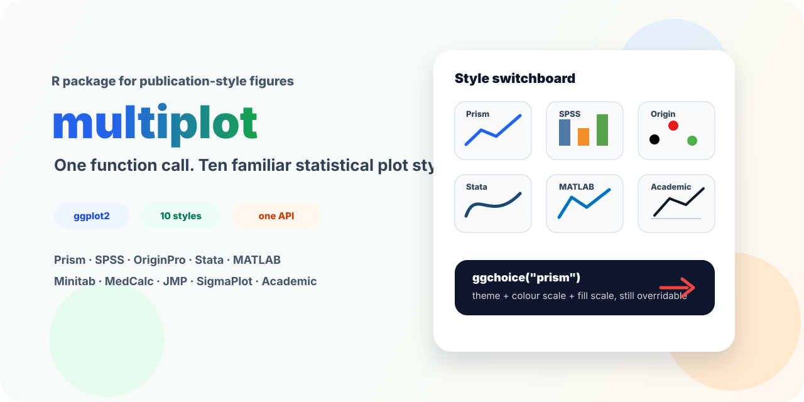

Emulate the default statistical plot styles of nine graphing software packages plus one academic publication style in R with a single function call — built on top of ggplot2.
library(ggplot2)
library(multiplot)
ggplot(mpg, aes(class, hwy)) +
geom_boxplot(aes(fill = class)) +
ggchoice("prism") # one call = theme + colour + fillHighlights
-
One API for many software looks:
ggchoice()applies theme, colour scale, fill scale, and axis details together. - 10 familiar visual styles: Prism, SPSS, OriginPro, Stata, SigmaPlot, JMP, MATLAB, Minitab, MedCalc, and Academic.
- Publication-friendly helpers: Prism-style columns, error bars, boxplots, and comparison annotations.
-
Still pure ggplot2: user-added scales after
ggchoice()keep priority, so every style remains easy to customize. -
Theme-only mode:
ggchoice("prism", include_scales = FALSE)applies the theme without replacing user colour/fill scales.
Why multiplot?
Every statistical graphing software (GraphPad Prism, SPSS, OriginPro, Stata, MATLAB, …) has a distinctive default visual style. When you move between software, your plots look different. When you publish in R, reviewers often expect a specific “look.”
multiplot solves this by bundling each software-inspired visual style into one function: ggchoice(). The "academic" style is an additional publication-oriented benchmark rather than a real software default.
Supported Styles
| Style | ggchoice() |
Key Visuals |
|---|---|---|
| GraphPad Prism | "prism" |
White bg, no grid, black box, sans-serif, pastel colours |
| SPSS (v12–24) | "spss" |
White bg, light grey grid, box border, muted professional palette, sans-serif |
| OriginPro (classic) | "origin" |
White bg, no grid, Black→Red→Green→Blue palette |
| Stata (s2color) | "stata" |
Light bluish tint, 15-colour s2color palette |
| Academic (AMS/Science) | "academic" |
Minimal B&W, no decoration, journal-ready |
| SigmaPlot | "sigmaplot" |
B&W default, light grid, boxed legend |
| JMP | "jmp" |
No grid, no frame, tick marks outside, clean |
| MATLAB (R2014b+) | "matlab" |
Black outer box, 7-colour R2014b order, inward ticks |
| Minitab | "minitab" |
Grey bg, dark blue lines, white grid, blue strips |
| MedCalc (ROC) | "medcalc" |
White bg, legend inside plot, clinical contrast |
Reproducing the manuscript figures
The package demo script generates all ten figures used in the companion F1000Research Software Tool Article after multiplot has been installed:
source(system.file("examples", "multiplot_demo.R", package = "multiplot"))For a GitHub-install workflow:
source("C:/Users/fengq/Desktop/multiplot_demo.R")For local development from this repository:
remotes::install_local(".", upgrade = "never")
source(system.file("examples", "multiplot_demo.R", package = "multiplot"))The demo installs multiplot from GitHub only if the package is not already available, and it does not remove or overwrite the user’s global R library.
Verification status
Direct screenshot checks currently cover Prism, SPSS, and MATLAB bar/box plots. Additional screenshot or template comparisons cover JMP, MedCalc, Minitab, OriginPro, SigmaPlot, and Stata for selected plot types. The package therefore aims for practical style emulation, not pixel-perfect reproduction of every commercial software output.
Evidence levels used in the manuscript:
| Level | Meaning | Current styles |
|---|---|---|
| A | Real software bar and box screenshots checked | Prism, SPSS, MATLAB |
| B | Screenshot/template plus documentation checked | JMP, MedCalc, Minitab, OriginPro, SigmaPlot, Stata |
| D | Internal benchmark, not a software default | Academic |
Installation
# From GitHub
remotes::install_github("sushuqiong/multiplot")Quick Start
library(ggplot2)
library(multiplot)
p <- ggplot(mpg, aes(class, hwy)) + geom_boxplot(aes(fill = class))
# Switch style with one call
p + ggchoice("prism") # GraphPad Prism look
p + ggchoice("spss") # SPSS look
p + ggchoice("origin") # OriginPro look
p + ggchoice("stata") # Stata s2color look
p + ggchoice("matlab") # MATLAB R2014b+ look
p + ggchoice() # default theme_bw()Overriding scales
Scales are additive — user calls after ggchoice() take priority:
ggplot(mpg, aes(class, hwy)) +
geom_boxplot(aes(fill = class)) +
ggchoice("prism") +
scale_fill_brewer(palette = "Set2") # your colour choice winsThis expected ggplot2 message may appear when you intentionally replace a default scale: Scale for fill is already present. Adding another scale.... Use include_scales = FALSE when you want only the theme and no default colour/fill scales:
ggplot(mpg, aes(class, hwy)) +
geom_boxplot(aes(fill = class)) +
ggchoice("prism", include_scales = FALSE) +
scale_fill_brewer(palette = "Set2")Prism-style features
T-bar error bars + Prism-style columns:
df <- data.frame(group = c("A","B"), mean = c(10, 15), sd = c(2, 3))
ggplot(df, aes(group, mean)) +
geom_col_prism(fill = "#5B9BD5") +
geom_errorbar_prism(aes(ymin = mean - sd, ymax = mean + sd)) +
ggchoice("prism")Statistical comparison annotations (requires ggpubr):
ggplot(ToothGrowth, aes(supp, len)) +
geom_boxplot(aes(fill = supp)) +
ggchoice("prism") +
stat_compare_means_prism(comparisons = list(c("OJ", "VC")))Exported Functions
| Function | Description |
|---|---|
ggchoice(style, include_scales = TRUE) |
Apply a software-derived visual style (theme + scales + optional axis offset) |
geom_errorbar_prism() |
Prism-style T-bar error bars |
geom_col_prism() |
Prism-style column bars (solid fill, thin black border) |
geom_boxplot_prism() |
Prism-style boxplot (black border, compact width, no outliers) |
stat_compare_means_prism() |
Prism-style significance annotations (wraps ggpubr) |
scale_shape_xxx() |
Software-specific point shape sequences (10 functions) |
ggchoice() internal scales |
Discrete colour/fill scales are applied automatically for each style |
scale_color/fill_xxx_c() |
Continuous colour/fill scales (heatmaps, surfaces, gradients) |
Discrete palettes interpolate when the number of groups exceeds the source palette length. Shape scales repeat their marker sequence with rep_len().
Continuous Scales
For heatmaps and continuous data, append _c to the scale name:
ggplot(volcano_df, aes(Var1, Var2, fill = value)) +
geom_tile() +
ggchoice("matlab") +
scale_fill_matlab_c() # Parula-style continuous gradientAvailable: prism_c, origin_c, matlab_c, stata_c, academic_c, minitab_c, medcalc_c (14 functions).
Design
-
Theme always applies, scales are overridable.
ggchoice()returns a list oftheme()+scale_color()+scale_fill(). Because ggplot2’s+is “later wins,” anyscale_*()you add afterggchoice()takes priority. -
Font fallback is generic. Style documentation names familiar fonts such as Arial or Helvetica, but the package defaults to
base_family = "sans"for cross-platform portability. Users who need exact font rendering should install the target font and passbase_family, or export with a font-aware device such asragg. -
No ggplot2 internals modified. All themes inherit from
theme_bw()ortheme_classic(). All scales usediscrete_scale(). Safe to use with any ggplot2 extension. -
Palettes are software-derived approximations. See the vignette and
inst/paper/verification_log.mdfor evidence level and version notes. -
Runtime dependencies are light. Core plotting requires ggplot2.
ggpubris optional forstat_compare_means_prism(),survivalis used only in the demo, andcolorspace/farverare analysis-only dependencies for the compliance benchmark.
F1000Research manuscript
The repository contains manuscript-support materials in inst/paper/, including the style ontology, compliance benchmark, verification log, and the script compute_compliance_assessment.R used to reproduce the Table 2 scores.
License
MIT — see LICENSE for details.
Citation and archived source
Current release target: multiplot v0.3.3.
- Version DOI: to be added after the v0.3.3 Zenodo archive is minted.
- Concept DOI: 10.5281/zenodo.21137144
- GitHub release: https://github.com/sushuqiong/multiplot/releases/tag/v0.3.3
GraphPad Prism, SPSS, OriginPro, Stata, SigmaPlot, JMP, MATLAB, Minitab, and MedCalc are trademarks or product names of their respective owners. multiplot is not affiliated with, endorsed by, or sponsored by those owners.